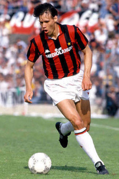
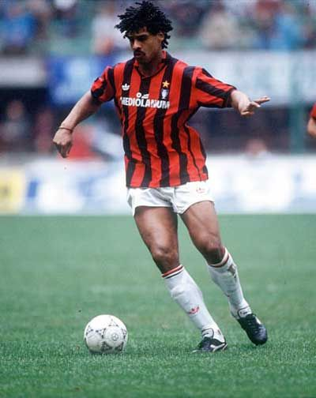

Marco VAN BASTEN - 1988
- Sous le signe des Pays-Bas et de Milan
Le triomphe de Marco van Basten à l'élection du Ballon d'Or européen 1988 est le couronnement d'un champion fidèle à sa nature et à sa conviction d'être ce qu'il est..
Nationalité : Hollandaise
Né le : 31 octobre 1964, à Utrecht (HOL)
Taille : 1,88
Poids : 80 kg
Poste : attaquant
Clubs : UVV Utrecht (1970-1980), Elinkwijk Utrecht (1980-1981), Ajax Amsterdam (1981-1987) et Milan AC (1987-1995)
Palmarès de joueur : Championnat d'Europe des nations 1988 ; Coupe intercontinentale des clubs 1989 et 1990 ; Supercoupe d'Europe 1989 et 1990 ; Coupe des champions 1989 et 1990 ; Coupe des Coupes 1987 ; Championnat des Pays-Bas 1982, 1983 et 1985 ; Championnat d'Italie 1988, 1992 et 1993 ; Coupe des Pays-Bas 1983, 1986 et 1987 ; Supercoupe d'Italie 1988 et 1992 ; meilleur buteur de l'Euro 1988 (5 buts) ; Soulier d'Or européen 1986 (37) ; meilleur buteur du Championnat des Pays-Bas 1984 (28), 1985 (22), 1986 (37) et 1987 (31) ; meilleur buteur du Championnat d'Italie 1990 (19) et 1992 (25)
Bilan en équipe nationale : 58 sélections A, 24 buts (1983-1992)
Bilan en phase finale de Coupe du monde : 1 participation, 4 matches (1990)
Palmarès Ballon d'Or : vainqueur en 1988, 1989 et 1992
Carrière d'entraîneur : Pays-Bas A (depuis juillet 2004)
Classement du Ballon d’Or France Football 1988 :

Marco Van Basten (Pays-Bas / AC Milan),
129 pts.
Ruud Gullit (Pays-Bas / AC Milan),
88 pts.

Frank Rijkaard (Pays-Bas / AC Milan),
45 pts.
Retour à l'accueil
 Marco VAN BASTEN - 1988
Marco VAN BASTEN - 1988